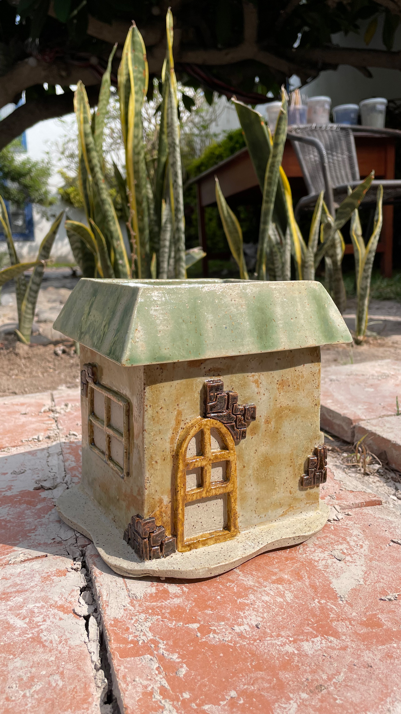

Welcome to my creative world!

![A playful assortment of handmade wood pieces, bringing joy and whimsy to any space. The image features a charming monkey face sculpture, carved with intricate details and a mischievous expression. Next to it is a turtle-shaped cutting board, skillfully crafted with smooth edges and a unique patterned surface. The wood grains shine through, adding warmth and natural beauty to both pieces. These delightful creations combine imagination and craftsmanship, inviting smiles and adding a touch of fun to any home decor or kitchen setting.](./images/carrusel_2.jpg)
![A photo capturing a memorable moment at the 2022 Bad Bunny concert in Peru. The image shows the excited concert-goer, wearing a vibrant outfit, enjoying the electrifying atmosphere. Surrounded by a sea of cheering fans, the individual is captured in mid-dance, radiating enthusiasm and joy. The stage is illuminated with dynamic lights, showcasing Bad Bunny's energetic performance. This image captures the thrill and excitement of the concert experience, creating a lasting memory of the unforgettable night spent immersed in music and celebration.](./images/carrusel_3.jpg)


Hi! My name is Thais and I'm a graphic designer, content creator, artist, ceramist and web developer. My favorite hobby is learning new hobbies and I love challenging myself to always have a new one.
CREATIVITY AND HARD WORK GO GREAT TOGETHER
Come with me to see my journey in this world.
![In Cusco, Peru, sitting on the edge of a bridge. The image captures the user enjoying the breathtaking view of the cityscape and surrounding mountains. The user is comfortably seated, legs dangling over the bridge, immersed in the serene atmosphere. The bridge features intricate stonework and arches, reflecting the architectural charm of Cusco. With a backdrop of colorful buildings and lush greenery, the scene showcases the unique blend of nature and history that defines this enchanting Peruvian city.](./images/hello.jpg)
Since I seem to never get bored, my work tends to be very diverse.
Check it out!
![An image of a meticulously crafted small handmade ceramic house. This ceramic house is a marvel of intricate details and precision. The miniature structure features a sloped roof, delicate windows, and a charming front door. The surface of the ceramic is adorned with carefully painted patterns and textures, enhancing its visual appeal. The artist's skill and attention to detail are evident in every aspect of this piece, from the precision of the architecture to the intricate ornamentation. The small size of the house adds to its delicate beauty, making it a remarkable work of art and a delightful addition to any collection of handmade ceramics.](./images/casita.jpg)
![An image illustrating the process of branding services, showcasing the key steps involved in developing a comprehensive brand strategy. The image features a series of interconnected stages, beginning with research and analysis, followed by target audience identification, brand positioning, message development, visual identity creation, marketing collateral design, and brand launch. Each step is represented by relevant icons and elements, highlighting the sequential progression of the branding process. This visual representation emphasizes the strategic planning, creativity, and coordination required to deliver successful branding services, resulting in a strong and memorable brand presence for businesses.](./images/branding.jpg)
![An image depicting the process of social media design services, illustrating the essential steps involved in creating engaging and visually appealing social media content. The image showcases a series of interconnected stages, starting with content strategy and planning, followed by graphic design, image editing, copywriting, and scheduling. Each step is represented by relevant icons and elements, demonstrating the workflow and coordination required for effective social media design services. This visual representation emphasizes the creativity, attention to detail, and strategic thinking involved in crafting captivating social media visuals and messaging that help businesses connect with their audience and achieve their marketing goals.](./images/socialmediadesign.jpg)
Creates and optimizes visual content for social media platforms to help your business grow.
Manage your brand identity and strategy to effectively communicate with your target audience and build brand recognition and loyalty.